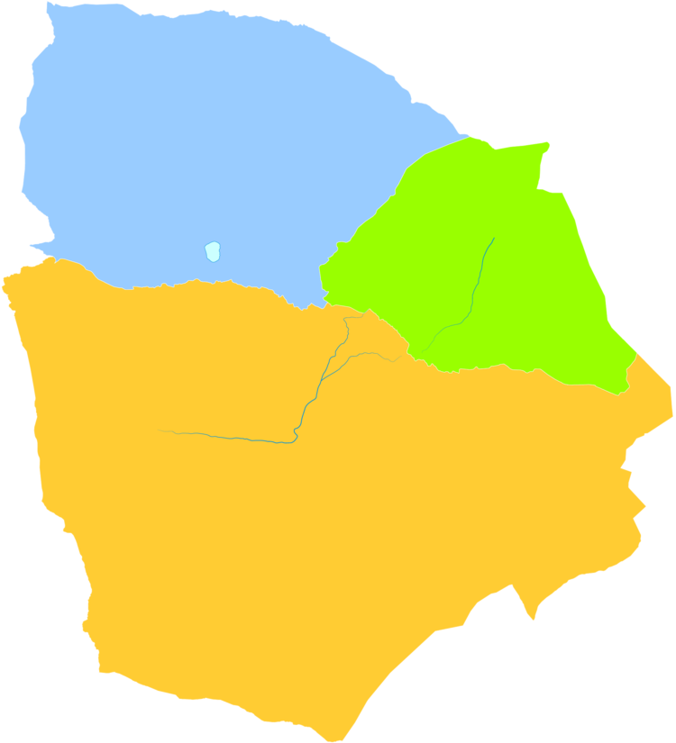
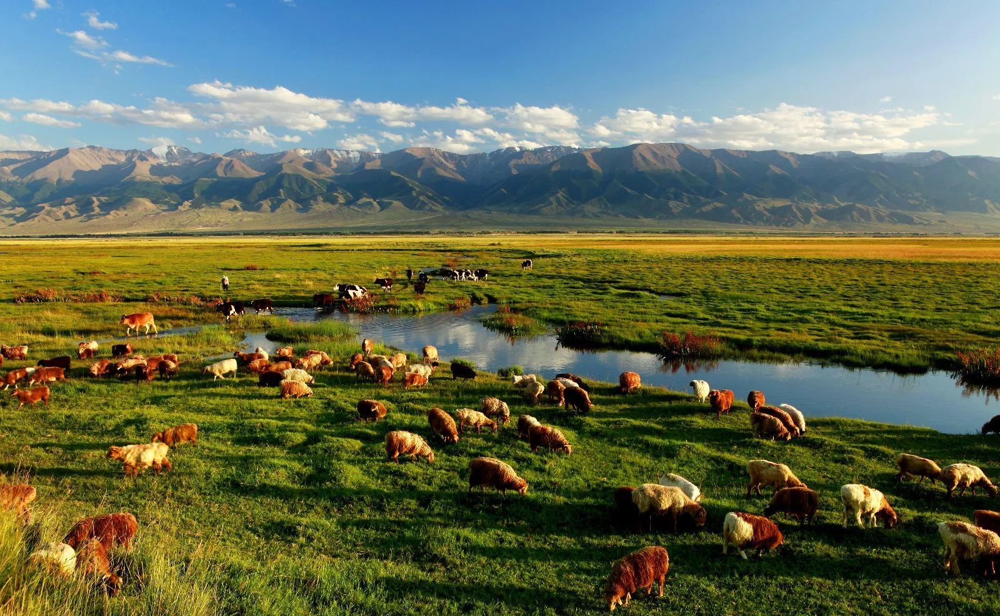
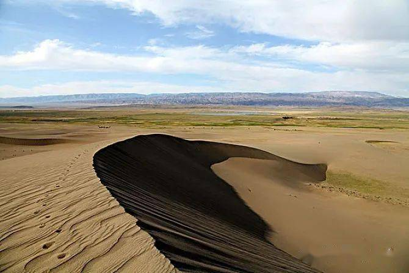
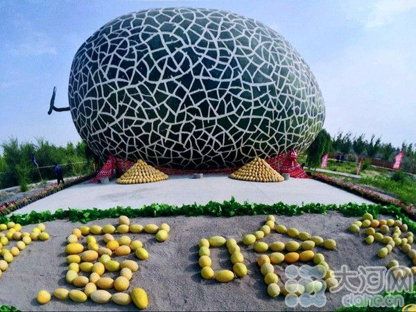

Barkol County

Barkol Kazakh Autonomous County is a part of Hami Prefecture in Xinjiang
and has an area of 38,445.3 km2. Barkol was made an autonomous county on October 1, 1954. It is noted
for camel and horse breeding with the Barkol horse well known throughout China. Due to the large number
of camels, which is unparalleled in China, the county is nicknamed the "county of ten thousand camels".
Yiwu

Yiwu County is a county in the northeast of the Xinjiang Uyghur Autonomous Region
and is under the administration of the Hami City. It contains an area of 19,511 km2. The Yiwu County is
between the Qarliq Shan mountain range and the border with Mongolia's Govi-Altai Province. Outside of the
mountain range, most of the county is within the Gobi Desert.
Yizhou

Yizhou is the central district of the Hami prefecture-level city, in Xinjiang Uyghur
Autonomous Region, China. Its population was 472,175 at the end of 2010. It is an important town on the Silk
Road and is also the famous producing area of cantaloupe.